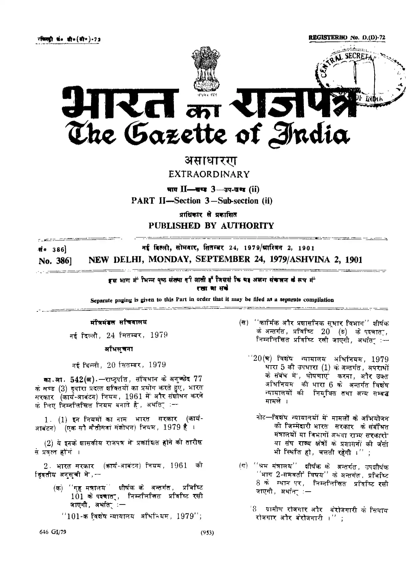
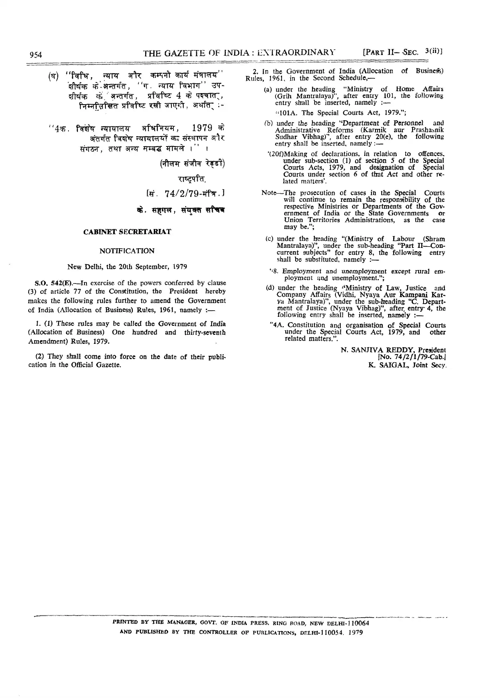

Amendment #137 (S.O. 542(E), 1979)
4 changes: 0 to the First Schedule, 4 to the Second Schedule. 4 applied
The order, page by page
Page 1 of 2

Page 2 of 2

1234after Schedule 2 › Ministry of Home Affairs › entry 101
- 101A. The Special Courts Act, 1979.
applied at schedule 2 › ministry MINISTRY OF HOME AFFAIRS › part II › group_heading The following subjects which fall within the… in the Rules after #137
after Schedule 2 › Department of Personnel and Administrative Reforms › entry 20(e)
- (20f)Making of declarations, in relation to offences. under sub-section (1) of section 5 of the Special Courts Acts, 1979, and designation of Special Courts under section 6 of that Act and other related matters³.
- Note The prosecution of cases in the Special Courts will continue to remain the responsibility of the respective Ministries or Departments of the Government of India or the State Governments or Union Territories Administrations, as the case may be.
applied at schedule 2 › ministry MINISTRY OF HOME AFFAIRS › department DEPARTMENT OF PERSONNEL AND ADMINISTRATIVE REFORMS ›… in the Rules after #137
states inferred loose
Schedule 2 › Ministry of Labour › Part II-Con- current subjects › entry 8
- 8. Employment and unemployment except rural employment and unemployment.
applied at schedule 2 › ministry MINISTRY OF LABOUR › part II › entry 8 in the Rules after #137
after Schedule 2 › Ministry of Law, Justice and Company Affairs › Depart- ment of Justice › entry 4
- 4A. Constitution and organisation of Special Courts under the Special Courts Act, 1979, and other related matters.
applied at schedule 2 › ministry MINISTRY OF LAW. JUSTICE AND COMPANY AFFAIRS › department C › entry 4A in the Rules after #137
How this document was read
Changes placed by an inference rule
| Change | Rule | Status | What |
|---|---|---|---|
| 2 | loose | accepted | change 2: ministry Department of Personnel and Administrative Reforms found within MINISTRY OF HOME AFFAIRS, found loosely |
Known issues
| Change | Issue | Known as |
|---|---|---|
| 2 | change 2: no entry 20 under schedule 2 › department DEPARTMENT OF PARLIAMENTARY AFFAIRS (in the states, not in the version before) | Entries not in the state |
From the Government of India (Allocation of Business) Rules, 1961 and their amendments, as published by the Cabinet Secretariat (cabsec.gov.in), read by orgpedia. The readings of the older scanned gazettes have known gaps.